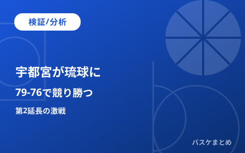

宇都宮と琉球、今日16時に対戦 直近2年のファイナリスト対決

広告スペース（AdSense）
宇都宮ブレックスと琉球ゴールデンキングスが、11月7日16時に対戦します。会場はブレックスアリーナ宇都宮です。
この記事では、直近2シーズンのファイナルでの対戦を振り返ります。
そのうえで、今日の一戦の位置づけを独自に整理します。
12時に更新：記事を宇都宮と琉球の試合展望に更新しました。
【展望】16時にブレックスアリーナ宇都宮で対戦
宇都宮ブレックスは今日、琉球ゴールデンキングスと対戦します。
試合開始は16時です。会場はとちぎん・ブレックスアリーナ宇都宮です。
この一戦は、今節の注目カードとして紹介されています。
【分析】2024-25シーズンは宇都宮が王座を獲得
2025年5月27日、横浜アリーナでチャンピオンシップ決勝第3戦が行われました。
宇都宮が73対71で琉球を下しました。
琉球は年間2位に終わりました。差はわずか2点でした。
【分析】2025-26シーズンは琉球が連覇に届かず
翌シーズンのチャンピオンシップ決勝では、琉球が長崎と対戦しました。
結果は琉球の0勝2敗でした。長崎が王者となりました。
琉球は2年続けてファイナルに進みました。しかし、優勝には届いていません。
【分析】琉球は今季の開幕戦をA東京に敗れている
琉球は9月22日の開幕戦で、A東京と対戦しました。
結果は73対84で、琉球が敗れました。
【分析】ファイナリスト対決が意味するもの
宇都宮は前回の顔合わせで王座を手にしました。琉球は開幕戦でA東京に敗れてシーズンを始めました。
今日の結果は、今季の両チームを比べる一つの材料になります。
出典（5件）
広告スペース（AdSense）